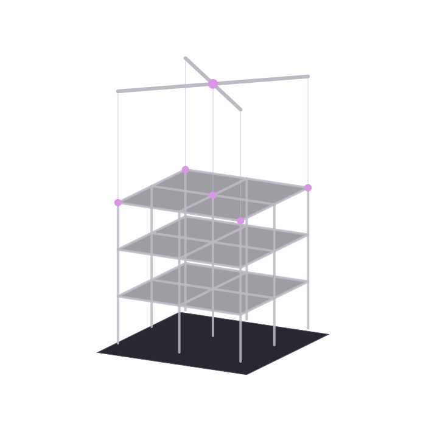
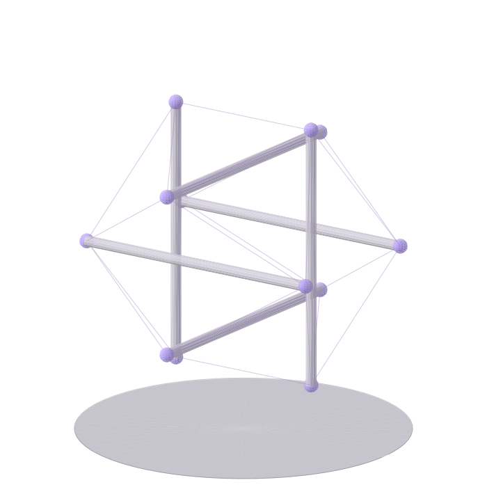
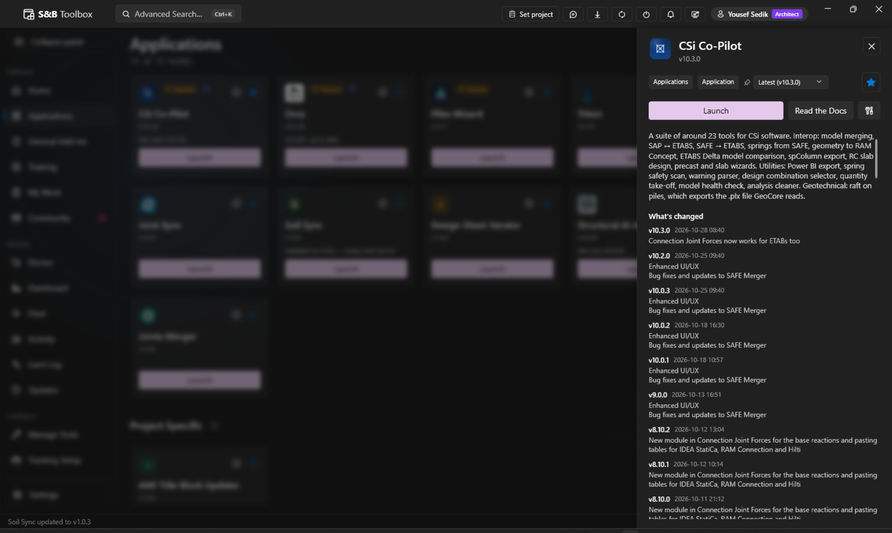
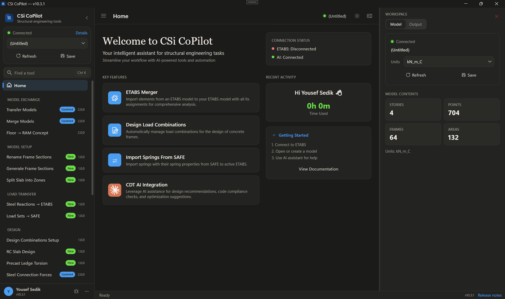
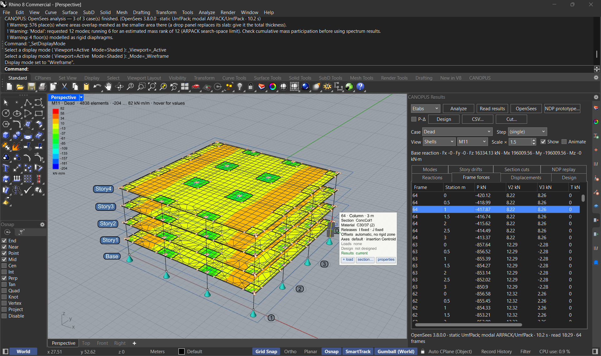
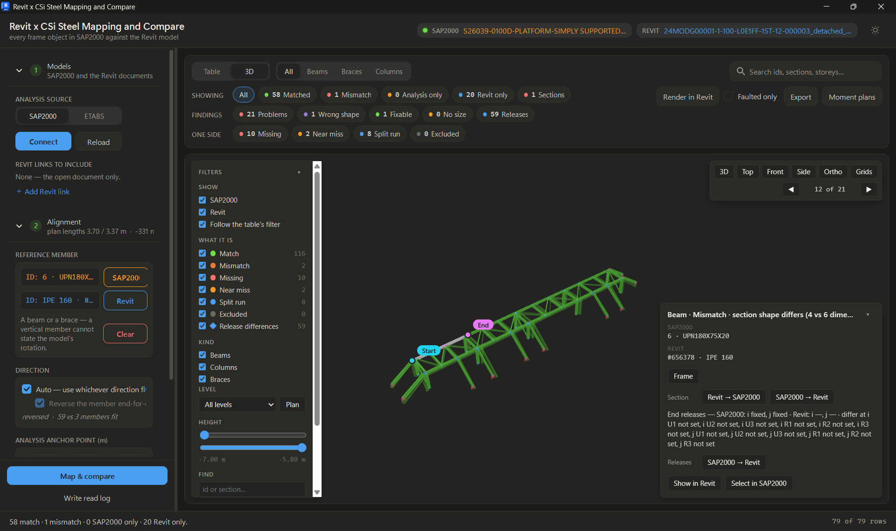
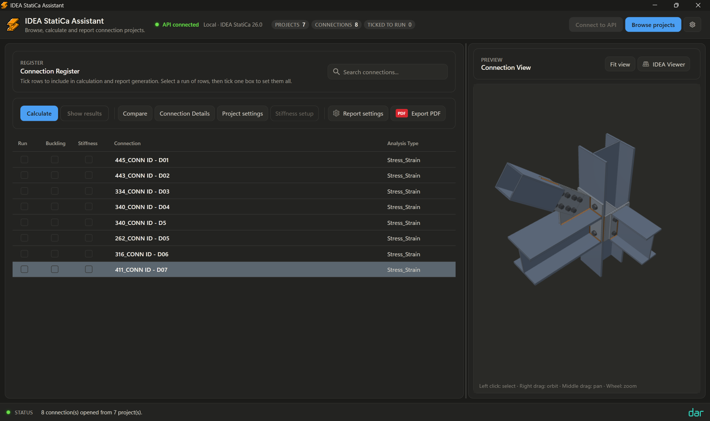
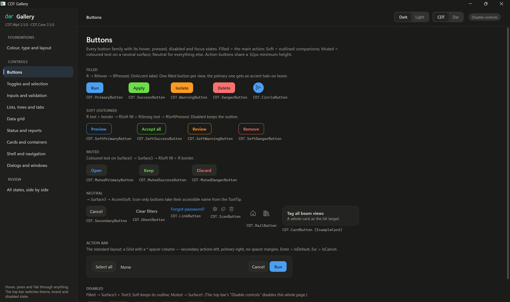
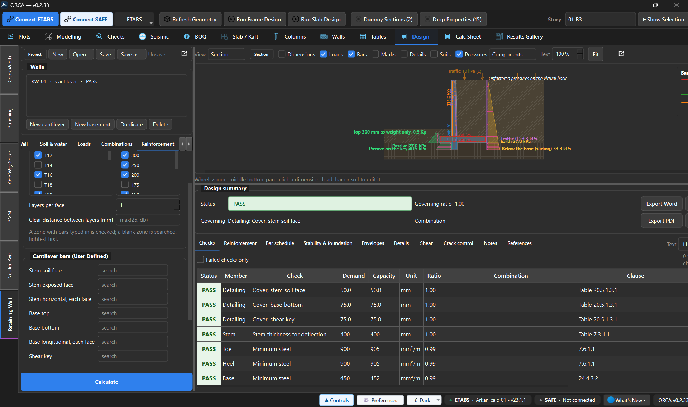
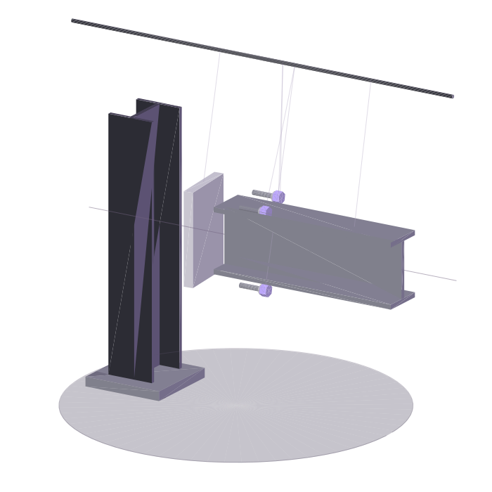

A structural engineer who writes the software engineers design with: add-ins, solvers and AI assistants for ETABS, SAP2000, Revit and Rhino.
Scroll(01) Practice
Most of a structural model's life happens between the analyses: merging, checking, fixing. I build the tools that take that work off the engineer's desk, so the hours go back to design.
- Now
- Digital Innovation Team, Dar
- Discipline
- Structural engineering
- Experience
- 1 year
- Based in
- Cairo, Egypt
- Section
- HEB 600
- Span
- 2.50 m · pin, roller
- Material
- 8-bit ASCII
(02) Load test
Steel,
compiled.
Code,
structured.
Study / 02 Equilibrium
A little tension.
A lot of possibilities.
Independent parts. One connected system. A study in the balance between what holds and what moves.
Six floating struts.
One continuous conversation.

(03) Selected work
Selected work
11 projects · 3 open slots
-

A consolidated application for every tool, plugin, training, metrics, documentations, news, and much more.
- Descriptive details of each tool with a detailed guideline and walkthrough
- Version numbering and release notes
- Smart fix button for stale or faulted entries
- Related trainings and documentations
C# · WPF · Win-UI · SUPABASE · SeriLog
See the case study ↓ -

A set of tools that live in one sidebar inside CSi applications and handle the model work engineers otherwise do by hand: merging models, diffing two versions, handing geometry to RAM and spColumn, and much more.
- ETABS Delta diffs setup and results between two models: materials, sections, combinations, drifts, modal output
- Raft on Piles iterates pile spring stiffnesses until they agree with the reactions
- Analysis Warnings collapses a .wrn file into the handful of issues that matter
- A Claude MCP that allows seamless integration with the CSi OAPI
C# · WPF · CSi OAPI
See the case study ↓ -

Grids, levels, frames, areas and supports are modelled in Rhino as objects carrying validated engineering data instead of loose attributes. The whole model moves between Rhino, CSi applications, and Revit.
- Roles read from geometry: vertical curves become columns, horizontal ones beams, diagonals braces
- Rolled steel sections picked from the embedded Euro catalogue
- Smart Progressive Collapse module
- OpenSees, ETABS, or SAP2000 as a backend analysis engine
- Ships as a Rhino package through the Package Manager
C# · .NET 8 · RhinoCommon · CSi OAPI
-

Pairs every frame in a running SAP2000 or ETABS model with its Revit member and compares section, position, level and end releases. Differences are fixed in whichever direction you pick, and missing members are built on either side.
- Unpaired members are sorted into missing, near miss, split run or excluded, so a near miss is never duplicated
- Creates members 20 to a transaction inside one undo group, where one commit per member had frozen Revit for minutes
- A three.js compare view in WebView2: 2,000 members build in about 10 ms
- One codebase for Revit 2023 to 2027, across .NET 4.8, 8 and 10
C# · WPF / MVVM · Revit API · CSi OAPI · three.js
-

A batch analysis tool to process dozens of IDEA StatiCa connections, with batch exporting of reports, comparison of models, and reviewing the details.
- Loads as many IDEA Statica connections as needed
- Configure analysis parameters for each connection
- Save, Load, and manage connection data
C# · IDEA StatiCa API · CSi OAPI · IFC · three.js
-

Shared WPF theme and window chrome for the UI/UX: dark and light palettes, accent tokens, tool windows that follow the theme, and a versioned theme dictionary so several add-ins can share one Revit process without breaking each other's styles.
C# · WPF · XAML
-

A PySide6 desktop app for designing and analyzing retaining walls.
Python · PySide6 · Role: Contributor
-
Two or three sentences: the problem, what you built, and what changed for the people using it.
- A detail that shows how it works
- A number: time saved, models processed, people using it
Stack
-
Two or three sentences: the problem, what you built, and what changed for the people using it.
Stack
-
Two or three sentences: the problem, what you built, and what changed for the people using it.
Stack
Also built
- Dar GH CSiGrasshopper ↔ CSi
- DarDocs · Excavation WizardRevit
- Batch Export Revit → RhinoRevit · Rhino
- CSi Section → Revit Family TypesRevit · CSi
- Connection Joint ForcesCSi
- Spot CoordinatesRevit
- TritonWhat it does
- UI Automation APIWhat it does

Study / 03 Into the details
Every detail.
A purpose.
- 01 S&B Toolbox
- 02 CSi Co-Pilot
- 03 Canopus
- 04 Revit × Steel
- 05 IDEA StatiCa Assistant
- 06 CDT.SDK
- 07 Orca · Retaining Wall Design
(04) Case study
ETABS Co-Pilot
The model work, between the analyses.
One sidebar inside ETABS that merges models, diffs two versions element by element, pushes geometry to RAM and spColumn, exports tables for Power BI, and keeps an AI assistant a click away.
- Role
- Lead developer
- Stack
- C# · WPF · CSi OAPI
- Users
- Dar structural teams
(04) Case study
ETABS Co-Pilot
The model work, between the analyses.
One sidebar inside ETABS that merges models, diffs two versions element by element, pushes geometry to RAM and spColumn, exports tables for Power BI, and keeps an AI assistant a click away.
- Role
- Lead developer
- Stack
- C# · WPF · CSi OAPI
- Users
- Dar structural teams
(05) Toolkit
Analysis & design
- ETABS · SAP2000 · SAFE
- OpenSees
- IDEA StatiCa
- spColumn · RAM Concept
- PLAXIS
Platforms
- Revit API
- Rhino 8 · RhinoCommon
- Grasshopper
- CSi OAPI
- Eto.Forms
Code
- C# · .NET 4.8 to 10
- WPF · MVVM · XAML
- Python · PySide6
- three.js · WebGL
- WebView2
Data & AI
- Claude API · tool use
- Supabase
- Power BI
- pandas · NumPy
- MessagePack · HDF5
(06) Experience
-
20XX to now
Computational Design Team
Your title · Dar
In-house structural software: CSi, Revit and Rhino add-ins, a team launcher with usage analytics, and AI assistants that work inside the model.
-
20XX to 20XX
Structural Engineer
Company
What you designed: building types, structural systems, codes, notable projects.
-
20XX to 20XX
Earlier role
Company
One or two lines.
-
20XX
B.Sc. Civil Engineering
University
Thesis or focus.
(07) Contact